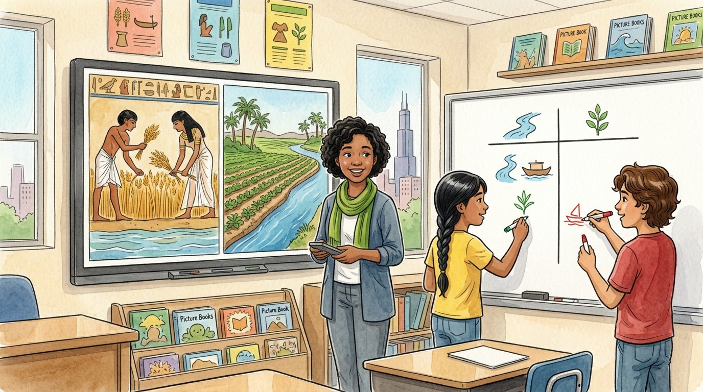

Grade 6 · Social studies · SS.6-8.H.1.LC
The gift of the Nile
A story about ancient Egypt, the Nile River and what has changed and stayed the same.
El regalo del Nilo. Un cuento sobre el antiguo Egipto, el río Nilo y lo que ha cambiado y lo que sigue igual.
Key words you will learn
Tap a green word to see what it means.
Toca una palabra verde para ver qué significa. Con la ayuda activada, verás también la definición en español.
The story
El cuento está en inglés. Pulsa «Listen to the story» para escucharlo y toca las palabras verdes cuando no entiendas una.
"Over 2,000 years ago, a Greek traveler named Herodotus called Egypt the gift of the Nile," said Ms. Haddad. She showed a photo taken from space: a long, thin green line running through a huge yellow desert. "That green line is almost all the farmland in Egypt. Today, about 95 out of every 100 Egyptians live close to the river."
"Historians ask two questions," she said. "What changed? And what stayed the same?" She drew a T-chart on the board. One side said . The other side said . "Continuity means something that has lasted for a long, long time."
On the screen appeared an ancient wall painting of farmers cutting wheat. "For thousands of years, the Nile rose every summer," said Ms. Haddad. "The spread water and dark, rich mud over the fields. Egyptians even organized their calendar around it, with three seasons: the flood, the growing time and the harvest."
Next came a drawing of a man pulling down a long pole with a bucket. "That's a ," said Ms. Haddad. "Farmers used it to lift water from the river to their fields." Then she showed a modern photo of a farmer using the same kind of pole. "Some farmers still use one today." Elías wrote shaduf on the Continuity side.
"Then, in the 1960s, Egypt built the Aswan High ," said Ms. Haddad. "Since it was finished in 1970, the Nile no longer floods every summer. The dam stores water for dry years and makes electricity, but the rich mud no longer reaches the fields, so farmers now buy fertilizer." Salma wrote the dam on the Change side, with two arrows: one good, one bad.
"What about writing?" asked Salma. "Ancient Egyptians wrote with ," said Ms. Haddad, "but today Egyptians speak and write Arabic. For a long time, nobody could read hieroglyphs at all, until scholars cracked the code about 200 years ago." Salma added writing to the Change side.
By the end of class, the chart was full. Change: the flood stopped, people use tractors and phones, the language is different. Continuity: people still live along the river, still farm wheat, and still sail boats on the Nile. "So history isn't only about what changed," said Elías. "It's also about what lasted." "And why it lasted," said Ms. Haddad. "The Nile is still the reason people live there."
As they packed up, Elías looked at his water bottle. "Lake Michigan is our Nile," he said. "Everything in Chicago depends on it." "Then you just found continuity in your own city," said Ms. Haddad.
Pause to connect
Visual arts · VA:Cn11.1.6
Look at this small blue hippopotamus. It was made in Egypt nearly 4,000 years ago and placed in a tomb. Today, museum visitors call it William.
Observa este pequeño hipopótamo azul. Se hizo en Egipto hace casi 4,000 años y se colocó en una tumba. Hoy, los visitantes del museo lo llaman William.
See the hippopotamus (The Metropolitan Museum of Art) (opens in a new tab)
What you will see: A bright blue hippo stands on four short legs. Dark drawings of lotus flowers, leaves and buds cover its body, as if the hippo were standing in the plants of the river.
Lo que verás: Un hipopótamo azul brillante está de pie sobre cuatro patas cortas. Por todo su cuerpo hay dibujos oscuros de flores de loto, hojas y capullos, como si el hipopótamo estuviera entre las plantas del río.
- Why do you think the artist painted river plants on the hippo?¿Por qué crees que el artista pintó plantas del río sobre el hipopótamo?
- Real hippos were dangerous to people on the Nile. How can one animal show that the river was both a gift and a danger?Los hipopótamos de verdad eran peligrosos para la gente del Nilo. ¿Cómo puede un animal mostrar que el río era a la vez un regalo y un peligro?
Think about it, then answer in your notebook or talk it over with someone at home.
Check your thinking
The lotus flowers show where the hippo lived: in the Nile, among its plants. The blue color can remind us of water. Long ago, someone broke three of this hippo's legs on purpose, so it could not hurt the person in the tomb; museum experts later repaired them. The river gave Egyptians food, water and rich mud, but it also had dangerous floods and dangerous animals. Art from the past is a primary source: it shows what people saw and what was important to them.
Glossary
- change
- When something becomes different over time.
- cambio: Cuando algo se vuelve diferente con el tiempo.
- continuity
- When something stays the same over a long time.
- continuidad: Cuando algo sigue igual durante mucho tiempo.
- annual flood
- The time each year when a river rises and covers the land near it.
- crecida anual: La época de cada año en que un río sube y cubre la tierra cercana.
- shaduf
- A long pole with a bucket on one end and a weight on the other, used to lift water from a river.
- shaduf (cigoñal): Un palo largo con un balde (cubeta) en un extremo y un peso en el otro, que sirve para sacar agua del río.
- dam
- A strong wall built across a river to hold back and control the water.
- presa: Un muro fuerte construido de lado a lado de un río para retener y controlar el agua.
- hieroglyphs
- The writing of ancient Egypt, made of small pictures and signs.
- jeroglíficos: La escritura del antiguo Egipto, hecha con dibujitos y signos.
Questions
Choose the correct answer. If you make a mistake, the story shows you where the answer is.
Elige la respuesta correcta. Si te equivocas, el cuento te muestra dónde está la respuesta.
-
Question A. What does continuity mean?
¿Qué significa continuidad?
Ms. Haddad says continuity means something that has lasted for a long, long time.
-
Question B. Why was the annual flood important to ancient Egyptians?
¿Por qué la crecida anual era importante para los antiguos egipcios?
The annual flood spread water and dark, rich mud over the fields, and Egyptians even organized their calendar around it.
-
Question C. Why did Elías put the shaduf on the Continuity side?
¿Por qué Elías puso el shaduf del lado de la continuidad?
Farmers used the shaduf in ancient times, and some farmers still use the same kind of pole today.
-
Question D. What was one change caused by the Aswan High Dam?
¿Cuál fue un cambio causado por la gran presa de Asuán?
Since the dam was finished in 1970, the Nile no longer floods every summer, and the rich mud no longer reaches the fields.
-
Question E. What did Elías learn about history?
¿Qué aprendió Elías sobre la historia?
Elías realized that history isn't only about what changed; it's also about what lasted.
Challenge: explain your thinking
Change and continuity
Make your own T-chart about your family or your neighborhood. Write two things that changed and two things that stayed the same over the last 30 years. Then explain why one of the things lasted.
Cambio y continuidad. Haz tu propia tabla en T sobre tu familia o tu barrio. Escribe dos cosas que cambiaron y dos que siguieron igual en los últimos 30 años. Después explica por qué una de esas cosas se mantuvo.
Answer in your notebook or talk it over with a classmate. Use evidence from the story.
Responde en tu cuaderno o coméntalo con un compañero. Usa evidencia del cuento.
Check your thinking
Example. Change: people now pay with phones, and the old movie theater closed. Continuity: families still shop at the same market, and the neighborhood still celebrates the same festival. Something often lasts because people still need it or because it is important to who they are.
Go further
The Aswan High Dam brought good and bad effects. Was it a good change for Egypt overall? Give one reason for and one reason against, then decide.
Para ir más lejos. La gran presa de Asuán trajo efectos buenos y malos. ¿Fue un buen cambio para Egipto en general? Da una razón a favor y una en contra, y después decide.
Check your thinking
For: the dam stores water for dry years, prevents dangerous floods and makes electricity. Against: the rich mud no longer reaches the fields, so farmers must buy fertilizer. Historians often say a change was good for some people and bad for others. Your decision is fine if you support it with evidence.